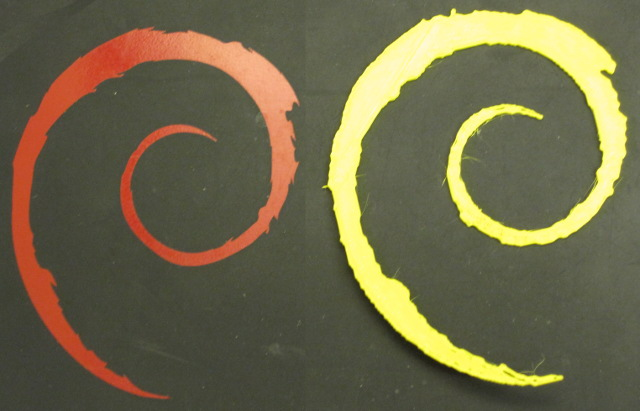
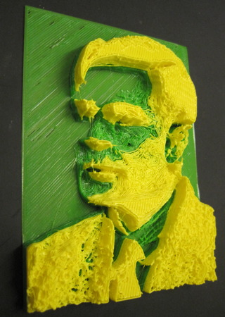
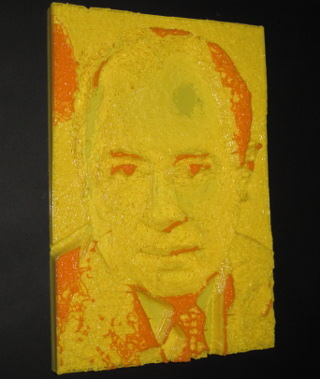

by
kyllikki
Examples
Here are some examples of using the tool
Debian open logo and scad output
Debian open logo and STL output
Lithophane of Alan Turing
Lithophane of John von Neumann
 by kyllikki
by kyllikki